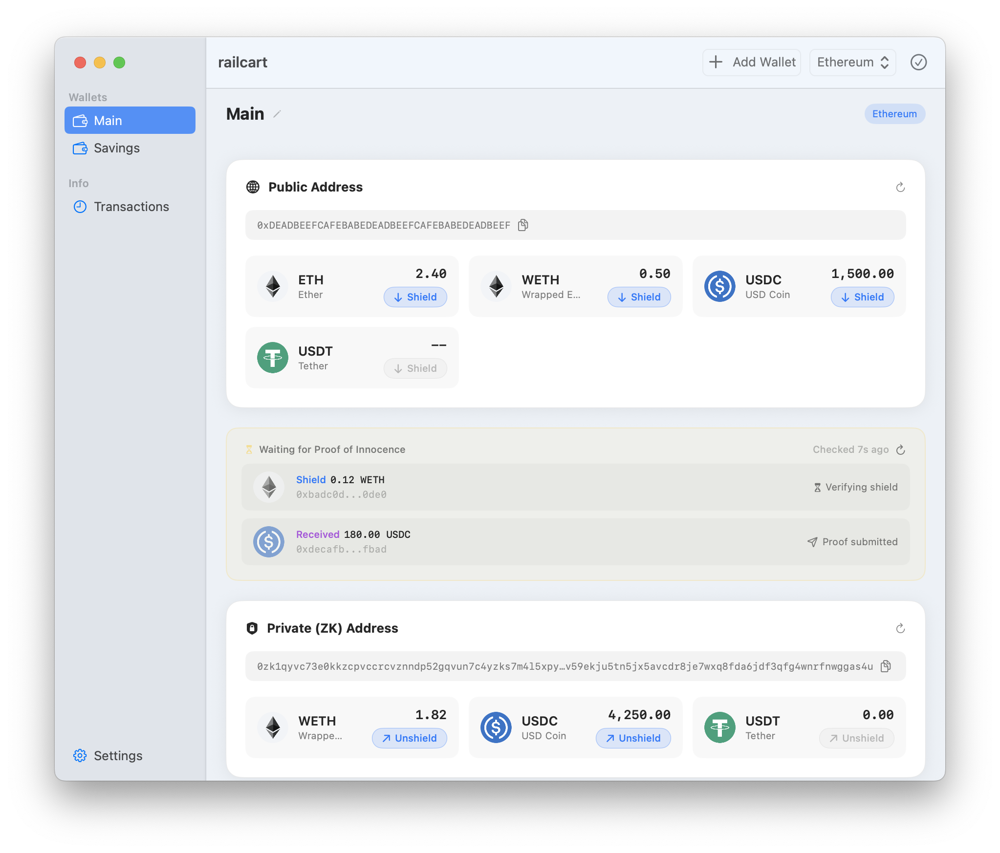

Shield & unshield
Move ETH and supported tokens in and out of the RAILGUN shielded pool with a couple of clicks. Testnets supported for practice.
Railcart is a native macOS wallet for RAILGUN — transact privately on Ethereum without giving up custody, telemetry-free.

Move ETH and supported tokens in and out of the RAILGUN shielded pool with a couple of clicks. Testnets supported for practice.
Balances update through an in-app zk-merkle tree scanner — no third party sees your addresses or activity.
Find RAILGUN broadcasters over the Waku P2P network so your unshielding transactions never touch your own IP.
Ship with sensible defaults or point Railcart at a local node. Per-chain configuration across mainnets and testnets.
Mnemonics and wallet keys are encrypted locally and guarded by your macOS security policy — password, Touch ID, FileVault.
Every line is auditable. Dependencies are vendored and updated on cooldowns to reduce supply chain risk.
Railcart has no analytics, no crash reporting, no server-side backend to leak data from. Updates are fetched over IPFS via railcart.eth.limo.
The app is distributed outside the App Store and signed ad-hoc so neither the developers nor the users have to identify themselves to Apple.
Mnemonics, passwords, and wallet state stay on your Mac — encrypted at rest, unlocked only by your own security policy.
The app ships with hardened runtime enabled so other processes can't inject code or read Railcart's memory.
Because Railcart is ad-hoc signed for privacy, macOS Gatekeeper will quarantine it on first launch.
After dragging Railcart to /Applications, open Terminal and run:
xattr -dr com.apple.quarantine /Applications/railcart.app